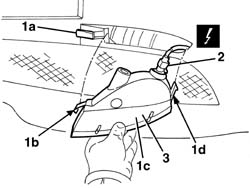

5550C30 L/H OR R/H FRONT TURN SIGNAL (ONE) - R+R
- Path
- Procedures > 55 ELECTRICAL EQUIPMENT > 5550 WARNING AND MANOEUVRING INDICATORS > 5550C TURN SIGNAL/HAZARD WARNING LIGHTS > 5550C30 L/H OR R/H FRONT TURN SIGNAL (ONE) - R+R
- Kind
- repair procedure (removal / refitting; the operation number is the code)
- Applies to
- all engines; all production periods
- Interactive page
- https://sloeber94.github.io/elrnDB-aGt/en/#/125001694
Applies to: all engines; all production periods
 Removing
Removing
 Refitting
Refitting1. Insert a screwdriver in the housing (1a) and release the tab (1b), then extract the front direction indicator (1c) gently, releasing it from the retainer (1d).
2. Disconnect the electrical connection.
Name | Connector | |
|---|---|---|
2 | Left front direction indicator | See F18 LEFT FRONT DIRECTION INDICATOR ( CONNECTORS ) |
Name | Connector | |
|---|---|---|
2 | Right front direction indicator | See F19 RIGHT FRONT DIRECTION INDICATOR |
3. Keep the front direction indicator.

Applies to: all engines; all production periods
Refitting
RemovingCheck that the direction indicator is not damaged and that the bulb is working properly.
Connect the electrical connection.
Fit the direction indicator in position engaging the retainer and the tab.
Check the operation of the direction indicator.